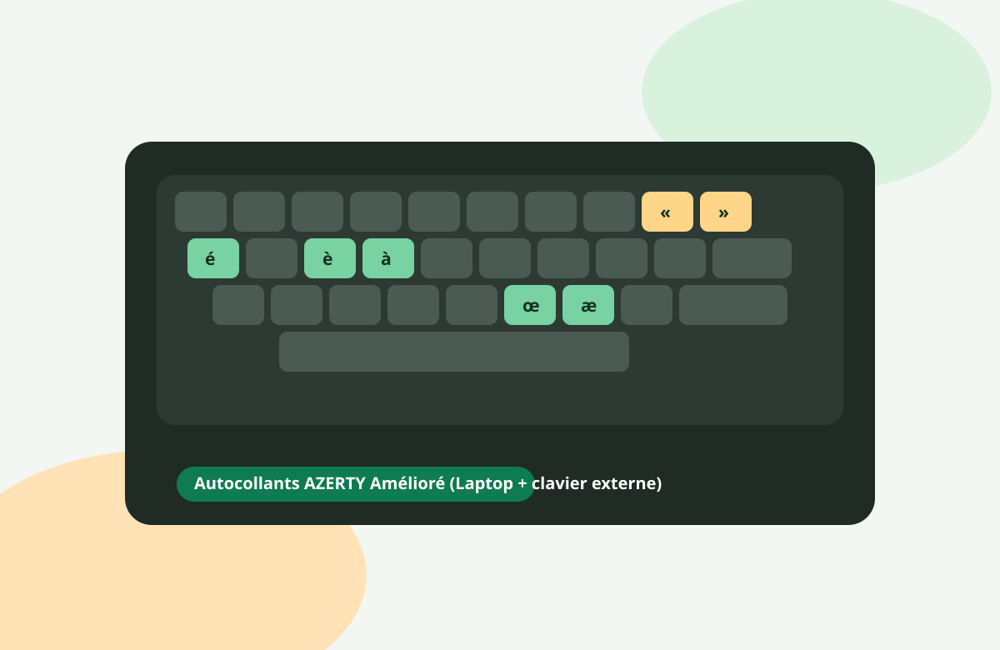

Français complet, minuscules et majuscules
Toutes les lettres accentuées du français, y compris les ligatures comme œ et æ, sont disponibles en accès direct ou via touches mortes, en minuscule comme en majuscule.
Norme française NF Z71-300
Une évolution du clavier AZERTY qui conserve vos habitudes, tout en rendant accessibles les caractères français et les lettres accentuées des langues à alphabet latin.
Histoire & dates clés
Le ministère de la Culture demande à AFNOR de travailler sur une disposition de clavier plus adaptée au français moderne.
Industriels, associations, experts linguistiques et ergonomes contribuent à la définition du futur standard.
La norme est présentée au ministère de la Culture, avant sa diffusion opérationnelle.
AFNOR publie la norme volontaire qui formalise l’AZERTY Amélioré.
La disposition normalisée française est intégrée officiellement dans Windows 11 version 24H2.
Pourquoi changer
Toutes les lettres accentuées du français, y compris les ligatures comme œ et æ, sont disponibles en accès direct ou via touches mortes, en minuscule comme en majuscule.
L’objectif est une disposition cohérente sur Windows, macOS et Linux, pour éviter les écarts de symboles et de combinaisons selon l’ordinateur utilisé.
Français, polonais, espagnol, italien, allemand, islandais, tchèque et d’autres langues basées sur l’alphabet latin peuvent être saisies sans contournements.
Compatibilité
| Système | Statut | Détails |
|---|---|---|
| Windows | Officiel | Support natif à partir de Windows 11, version 24H2. Sur les versions plus anciennes, des pilotes tiers peuvent être utilisés. |
| macOS | Non officiel |
Installation simple possible via fichier de disposition (.keylayout /
.bundle)
issu de projets communautaires.
|
| Linux / Unix | Non officiel | Pilotes et configurations disponibles via la communauté (XKB/IBus selon la distribution). |
Matériel
La liste est chargée depuis un fichier externe data/claviers.json. Après publication
du projet sur GitHub, la communauté pourra proposer des mises à jour via pull requests.
La disponibilité est évaluée selon le marquage des touches physiques.
Critère de support: possibilité de commander en ligne un laptop avec un clavier physique AZERTY Amélioré lors de la configuration d’achat.
Critère de support: disponibilité de claviers externes avec marquage des touches conforme (ou très proche) de l’AZERTY Amélioré.
Dernière mise à jour de la liste: —
Transition pratique
Le support matériel natif reste encore limité. En attendant une offre plus large, les autocollants de touches permettent de migrer rapidement, sans changer de clavier.
Cette solution fonctionne pour les claviers de laptop et pour les claviers externes.
